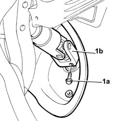
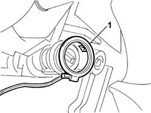

4110A30 Support with steering control shafts - R.R.
- Path
- Procedures > 41 STEERING > 4110 steering control and linkage > 4110A steering control > 4110A30 Support with steering control shafts - R.R.
- Kind
- repair procedure (removal / refitting; the operation number is the code)
- Applies to
- all engines; all production periods
- Interactive page
- https://sloeber94.github.io/elrnDB-lThss/en/#/172107
Applies to: all engines; all production periods
 Removing
Removing
 Refitting
Refitting- Disconnect the negative battery terminal.
See in Op. 4110A10 STEERING WHEEL - R.R. for replacement or checks
See in Op. 7040A26 Steering column TRIM - R.R.
See in Op. 5580C12 CLOCK SPRING for AIR BAG system - R.R.
See in Op. 5550A12 complete stalk unit - r+r for versions with air bag
See in Op. 7040A37 Fuse access cover in instrument panel - R.R.
1. Undo the fixing bolt (1a) and disconnect the steering column (1b) from the steering box.

Applies to: all engines; all production periods
1. Remove the aerial from the ignition switch.

Applies to: all engines; all production periods
1. Disconnect the electrical connectors for the ignition switch.
 | Description | Connector |
|---|---|---|
1 | Ignition switch | H001A |
| Description | Connector |
|---|---|---|
1 | Ignition switch | H001B |
2. Undo the bolts fixing the support to the dashboard crossmember.
3. Disconnect the connectors for the electric axial and vertical movement control motors for the steering control shaft support.
| Description | Connector |
|---|---|---|
3 | Steering wheel axial movement motor | N028A |
| Description | Connector |
|---|---|---|
3 | Steering wheel vertical movement motor | N029A |
| Description | Connector |
|---|---|---|
3 | Steering wheel axial movement motor | N028B |
| Description | Connector |
|---|---|---|
3 | Steering wheel vertical movement motor | N029B |
Applies to: all engines; all production periods
Refitting
Removing- Connect the connectors for the electric axial and vertical movement control motors for the steering control shaft support.
| Description | Connector |
|---|---|---|
. | Steering wheel axial movement motor | N028A |
| Description | Connector |
|---|---|---|
. | Steering wheel vertical movement motor | N029A |
| Description | Connector |
|---|---|---|
. | Steering wheel axial movement motor | N028B |
| Description | Connector |
|---|---|---|
. | Steering wheel vertical movement motor | N029B |
- Position the support with the steering control shafts in their housing and tighten the fixing bolts to torque.
 | Value - daNm | Fastening | Component | Ø |
|---|---|---|---|---|
. | 2.8 | Bolt | STEERING SHAFT MOUNTING | M8 |
- Connect the electrical connectors for the ignition switch.
| Description | Connector |
|---|---|---|
. | Ignition switch | H001A |
| Description | Connector |
|---|---|---|
. | Ignition switch | H001B |
- Reposition the aerial for the ignition switch.
- Tighten the bolt fixing the steering column to the steering box to torque.
| Value - daNm | Fastening | Component | Ø |
|---|---|---|---|---|
. | 2 | Bolt | STEERING SHAFT MOUNTING | M8 |
See in Op. 7040A37 Fuse access cover in instrument panel - R.R.
See in Op. 5550A12 complete stalk unit - r+r for versions with air bag
See in Op. 5580C12 CLOCK SPRING for AIR BAG system - R.R.
See in Op. 7040A26 Steering column TRIM - R.R.
See in Op. 4110A10 STEERING WHEEL - R.R. for replacement or checks
- Connect the negative battery terminal.
Topics linked from this page (5)
- 4110A10 STEERING WHEEL - R.R. for replacement or checks
- 5550A12 complete stalk unit - r+r for versions with air bag
- 5580C12 CLOCK SPRING for AIR BAG system - R.R.
- 7040A26 Steering column TRIM - R.R.
- 7040A37 Fuse access cover in instrument panel - R.R.